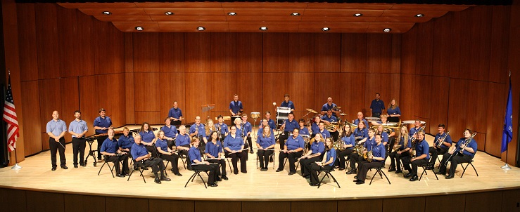

WELCOME |
Since 1898, The Manitowoc Marine Band has brought together a wide variety of area musicians, from high school students to retirees, amateurs to professionals, to learn and hone their skills in the art of wind band music. Each year, this extraordinary collaboration culminates in a series of local concerts, made freely available for the enrichment and enjoyment of an audience of thousands.

The Manitowoc Marine Band is dedicated to achieving excellence in music performance and education, while providing opportunities for cultural enrichment, community engagement, and historical preservation.